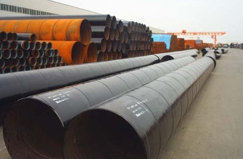

螺旋钢管厂生产工艺及标准分类
螺旋钢管厂生产工艺及标准分类
螺旋管产品图
一、螺旋钢管生产工艺
螺旋钢管是以带钢卷板为原材料,经常温挤压成型,以自动双丝双面埋弧焊工艺焊接而成的螺旋缝钢管. 下面是螺旋钢管厂的生产工艺流程:
（1）原材料即带钢卷，焊丝，焊剂。在投入前都要经过严格的理化检验。
（2）带钢头尾对接，采用单丝或双丝埋弧焊接，在卷成钢管后采用自动埋弧焊补焊。
（3）成型前，带钢经过矫平、剪边、刨边，表面清理输送和予弯边处理。
（4）采用电接点压力表控制输送机两边压下油缸的压力，确保了带钢的平稳输送。 （5）采用外控或内控辊式成型。
（6）采用焊缝间隙控制装置来保证焊缝间隙满足焊接要求，管径，错边量和焊缝间隙都得到严格的控制。
（7）内焊和外焊均采用美国林肯电焊机进行单丝或双丝埋弧焊接，从而获得稳定的焊接质量。
（8）焊完的焊缝均经过在线连续超声波自动伤仪检查，保证了100%的螺旋焊缝的无损检测覆盖率。若有缺陷，自动报警并喷涂标记，生产工人依此随时调整工艺参数，及时消除缺陷。
（9）采用空气等离子切割机将钢管切成单根。
（10）切成单根钢管后，每批钢管都要进行严格的首检制度，检查焊缝的力学性能，化学成份，溶合状况，钢管表面质量以及经过无损探伤检验，确保制管工艺合格后，才能正式投入生产。
（11）焊缝上有连续声波探伤标记的部位，经过手动超声波和X射线复查，如确有缺陷，经过修补后，再次经过无损检验，直到确认缺陷已经消除。
（12）带钢对焊焊缝及与螺旋焊缝相交的丁型接头的所在管，全部经过X射线电视或拍片检查。
（13）每根钢管经过静水压试验，压力采用径向密封。试验压力和时间都由钢管水压微机检测装置严格控制。试验参数自动打印记录。
（14）管端机械加工，使端面垂直度，坡口角和钝边得到准确控制。
二、螺旋钢管及其标准分类
承压流体输送，用螺旋缝埋弧焊钢管SY5036-2000，主要用于输送石油、天然气的管线；
承压流体输送用螺旋缝高频焊钢管SY5038-2000，用高频搭接焊法焊接的，用于承压流体输送的螺旋缝高频焊钢管。钢管承压能力强，塑性好，便于焊接和加工成型； 一般低压流体输送，用螺旋缝埋弧焊钢管SY5037-2000，采用双面自动埋弧焊或单面焊法制成的用于水、煤气、空气和蒸汽等一般低压流体输送用埋弧焊钢管。
现在螺旋钢管的常用标准一般分为:SY/T5037-2008（部标、也叫 普通流体输送管道用螺旋缝埋弧焊钢管）、GB/T9711.1-2008（国标、也叫石油天然气工业输送钢管交货技术条件第一部分：A级钢管(到目前要求严格的有GB/T9711.2 B级钢管)）、API-5L（美国石油协会、也叫管线钢管；其中分为PSL1和PSL2两个级别）、SY/T5040-2008（桩用螺旋焊缝钢管）。 SY/T5037-2008是石油部设标准一般都称做部标 GB/T9711.1-2008国标螺旋管，石油天然气工业输送钢管，A级 一般低压流体输送用螺旋缝高频焊钢管（SY5039-2000）是以热轧钢带卷作管坯，经常温螺旋成型，采用高频搭接焊法焊接用于一般低压流体输送用螺旋缝高频焊钢管。 桩用螺旋焊缝钢管（SY5040-2000）是以热轧钢带卷作管坯，经常温螺旋成型，采用双面埋弧焊接或高频焊接制成的，用于土木建筑结构、码头、桥梁等基础桩用钢管。
螺旋钢管钢材产吕主要分布在等厂家生产及制造.广东地区也是全国制管螺旋钢管基地.
三、螺旋钢管材质
Q235A，Q235B、20#、Q345（16Mn）、 L245(B)、L290（X42）、L320（X46）、L360（X52）、L390(X56)、L415(X60)、L450(X65)、L485(X70)、L555(X80) L290NB/MB（X42N/M）、L360NB/MB（X52N/M）、L390NB/MB(X56N/M)、L415NB/MB(X60N/M)、L450MB(X65)、L485MB(X70)、L555MB(X80)。
四、螺旋钢管用途
螺旋钢管主要应用于自来水工程、石化工业、化学工业、电力工业、农业灌溉、城市建设，是我国开发的二十个重点产品之一。
作液体输送用：给水、排水。作气体输送用：煤气、蒸气、液化石油气。作结构用：作打桩管、作桥梁；码头、道路、建筑结构用管等。
地址：河北沧州螺旋钢管生产基地
手机：186-3170-5801 == QQ791117